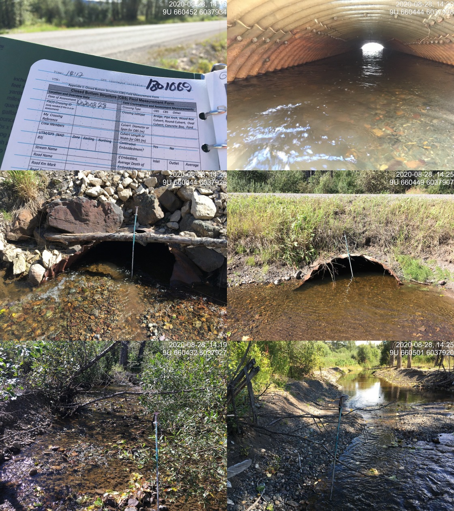

Appendix - 197665 & 197664 & 3042 - Barren Creek
Site Location
PSCIS crossing 197665 is on Barren Creek under the CN Railway located approximately 25km east of Houston, BC. The structure is located approximately 20m upstream from the confluence with the Bulkley River. CN Railway is the responsibility of CN Rail.
PSCIS crossing 197664 is on Highway 16 with the highway culvert located approximately 120m upstream from the confluence with the Bulkley River and 100m upstream of the railway. Highway 16 is the responsibility of the Ministry of Transportation and Infrastructure.
PSCIS crossing 3042 is located at km 13.5 of Barren Creek FSR and approximately 10km upstream of Barren Creek FSR. Barren Creek FSR is the responsibility of FLNR - Nadina Forest District.
Background
The Barren Creek watershed upstream of the highway is approximately 24.5km2 in area with an estimated 11ha of wetland and 29ha of lake documented upstream. At the highway, (600m of elevation) Barren Creek is a fourth order stream with a maximum watershed elevation of aproximatley 1300m. Fish documented as present upstream of the highway include cutthroat trout, coho salmon, rainbow trout, steelhead, chinook salmon, and lamprey (general) (MoE 2020a). Although not recorded in MoE (2020b) at the time of reporting, an impassable falls (Wilson Falls) has been documented approximately 6.2km upstream from the highway (pers. comm. Jonathan Van Barneveld, Forester - FLNR). Although there are several unassessed road stream crossing structures and crossings documented in PSCIS as barriers on tributary systems to the Barren Creek mainstem downstream of the falls as well as upstream of Barren Creek FSR, the quantity of habitat in these blocked and potentially blocked stream segments likely very minimal and with low fisheries value due to the small size of the upstream watersheds.
PSCIS crossing 8733, located at km 18.2 of North Road (Michelle Bary FSR) and approximately 1.5km upstream from Highway 16. The culvert was replaced with a bridge by Canadian Forest Products in 2018 (MoE 2021b; Patterson 2010).
The Barren Creek watershed upstream of 3042 is approximately 3.9km2 in area with an estimated 4ha of wetland and 4ha of lake documented upstream. The stream is fourth order at this location. Although fish have not been previously documented upstream of 3042 in MoE (2020a), FINS Consulting (2014) report rainbow trout fry downstream of the lake at the top end of the watershed.
In the summer of 1998, the Nadina Community Futures Development Corporation (NCFDC) carried out a detailed Level 1 Fish, Fish Habitat and Riparian Assessment in the first and second reaches of Barren Creek as well as several other large Upper Bulkley River tributary streams and the Upper Bulkley mainstem. The area surveyed extended to 4.2km from the mouth covering near 4km of habitat upstream of crossing 197664 (NCFDC 1998). Building on these assessments and detailed fish sampling, NCFDC (1998) developed restoration prescriptions for the lower reaches of the Barren Creek. Prescriptions were developed to address what the authors termed moderately to severely disturbed habitat due to:
- loss of riparian forest and soil compaction in areas used for agriculture, the powerline corridor, transportation corridors and at housing developments within the floodplain.
- loss of the shrub/herb layer and soil compaction from cattle grazing where overstory still present.
- removal of large woody debris which controls lateral channel movement and plant community distribution on the floodplain.
Impacts noted included:
* extensive bars, extensive riffles, minimal pool area, eroding banks and sediment wedges.
* high water temperatures, the absence of species historically present in the reach, and extreme aggradation.
* access issues related to bank instability, extremes in water levels, as well as undersized and poorly installed culverts.
Overall, NCFDC (1998) report that, in an unimpacted state, the first two reaches of Barren Creek are critical and productive areas for spawning and rearing particularly for coho and steelhead. They also note that the area up to North Road may be utilized for juvenile chinook rearing. Detailed prescriptions for restorative measures that address the noted impacts are documented in NCFDC (1998) and include measures related to slope stabilization, bank stabilization, sediment filtering and cattle exclusion.
Overwintering studies using minnowtrapping were conducted downstream of the highway culvert between 2005 and 2009 with coho and rainbow trout/steelhead captured. Results are summarized in Donas and Newman (2006), Donas and Newman (2007), Donas and Newman (2008) and Donas and Newman (2010).
PSCIS stream crossings 197665 and 197664 were rated as high priorities for habitat confirmation assessments after consultation with the Office of Wet’suwet’en, Fisheries and Oceans Canada representatives and Canadian Wildlife Federation due to concerns related to the aforementioned land-use impacts as well as ongoing dredging taking place upstream and downstream of Highway 16. Crossing 3042 was rated as a high priority for follow up as it was ranked as a high priority in both Irvine (2018) and Casselman and Stanley (2010). A map of the watershed is provided in map attachment 093L.114.
Stream Characteristics at Crossings 197665 and 197664
At the time of the survey, crossing 197665 structures under the CN Railway were fully embedded and considered passable according to the provincial protocol. Each of the two pipes were 0.9m in diameter with lengths of 25m, culvert slopes of 1%, a stream width ratio of 3.9 and outlet drops of 0m (Table 5.66). At the time of the survey, only one of the pipes was passing water and this structure appeared to be potentially failing as the top of the concrete structure was tilted towards the Bulkley River.
Crossing 197664 on Highway 16 was 2.5m in diameter with a length of 15m, a culvert slope of 2%, a stream width ratio of 1.9 and an outlet drop of 0m (Table 5.67). Water temperature was 12\(^\circ\)C, pH was 8 and conductivity was 156uS/cm.
Crossing 3042 on Barren Creek FSR was unembedded, not backwatered and considered a barrier to fish passage according to the provincial protocol. The pipe was 1m in diameter with a length of 23m, a culvert slope of 1.5%, a stream width ratio of 1.9 and an outlet drop of 0m (Table 5.68). Water temperature was 10\(^\circ\)C and pH was 7.4.
Stream Characteristics Downstream of 197665
Crossing 197665 is located 30m upstream of the Bulkley River and within the active floodplain. The armoured railway bisects a series of three historic oxbows immediately east of culvert, preventing access to potentially valuable rearing and refuge habitat.
Stream Characteristics Upstream of 197665 and downstream of 197664
The stream was surveyed upstream from 197665 for 100m to Highway 16 (Figures 5.77 - 5.78). Within the area surveyed, total cover amount was rated as moderate with overhanging vegetation dominant. Cover was also present as small woody debris (Table 5.69). The average channel width was 4.7m, the average wetted width was 2.7m and the average gradient was 1.8%. Abundant gravels and small cobbles suitable for resident, fluvial, adfluvial and anadromous salmonid spawning were present throughout the area surveyed. Habitat was rated as moderate value with habitat present suitable for resident and anadromous fry/juvenile salmonid rearing and spawning.
Stream Characteristics Upstream of 197664
Barren Creek was surveyed upstream from 197664 for 800m (Figures 5.79 - 5.80). Within the area surveyed, total cover amount was rated as moderate with undercut banks dominant. Cover was also present as small woody debris, large woody debris, and overhanging vegetation (Table 5.69). The average channel width was 7.2m, the average wetted width was 4.7m and the average gradient was 3%. An active cut was noted approximately 100m upstream of culvert. It is suspected that this area is constantly depositing gravels into stream. There extensive areas of gravels suitable for CO spawning. Riparian vegetation consisted of a mature cottonwood forest with right bank armouring and riparian removal along the adjacent private road. Habitat was rated as high value for resident and anadromous salmonid rearing and spawning.
Stream Characteristics Downstream of 3042
Barren Creek was surveyed downstream from 3042 for 400m (Figures 5.81 - 5.82). The area surveyed consisted of a series of beaver dams with impounded areas upstream ranging in length from 10 - 100m and dam heights ranging from 0.7 - 1.2m. Total cover amount was rated as moderate with undercut banks dominant. Cover was also present as deep pools, overhanging vegetation, and instream vegetation (Table 5.69). The average channel width was 18m, the average wetted width was 15m and the average gradient was 0.5%. At the bottom end of the site, flooded forest and shrub areas transitioned to a small marsh with emergent aquatic vegetation and extensive areas of open water. Water depths in the marsh were estimated at over 1m. Habitat value was rated as moderate for resident salmonid rearing and overwintering.
Stream Characteristics Upstream of 3042
Barren Creek was surveyed upstream from 3042 for 400m (Figures 5.83 - 5.84). A beaver influenced wetland was located immediately upstream of crossing and extended upstream for more than 200m. Survey data was collected beginning from an area located approximately 900m upstream of crossing and terminating at the beaver dam controlled outlet of a small lake. Within the area surveyed, total cover amount was rated as moderate with undercut banks dominant. Cover was also present as deep pools, overhanging vegetation, and instream vegetation (Table 5.69). The average channel width was 2.4m, the average wetted width was 2.2m and the average gradient was 3%. The area surveyed varied from cobble/boulder channel flowing freely to primarily glide habitat with depths ranging from 60 - 100 cm in depth. There were occasional pockets of gravels in the channel near the start of the survey with some pools associated with large woody debris throughout. A large beaver pond/lake area was located at the top end of the site. Additional habitat information for areas upstream of the crossing are recorded in the provincial fisheries information summary system (MoE 2020c). Habitat value was rated as moderate for resident salmonid rearing and overwintering.
Table 5.70 presents preliminary fish passage modelling data for crossing 197665 with spawning and rearing habitat estimated for chinook, coho, sockeye and steelhead. Modelled estimates of the total length of salmon or steelhead habitat upstream of the crossing before potential barriers are 303.8km of potential spawning habitat and 605.8km of potential rearing habitat.
Structure Remediation and Cost Estimate
Costs to replace 197665 and 197664 with bridges are estimated at $5,000,000 per crossing. Structure replacement with an embedded culvert is recommended for 3042 (streambed simulation - 3m span) with an estimated cost of $100,000 resulting in cost benefits of 17 linear m/$1000 and 40.8m2/$1000.
Conclusion
Although 197665 and 197664 are technically considered passable, both corridors appear to have been poorly designed. Dredging to keep 197664 from directing flows over Highway 16 during high flow events has been an ongoing source of conflict and the structures are part of a greater land use scenario that negatively affects ecological function and blocks access to a series of historic upper Bulkley River oxbows.
There is 1.7km of mainstem habitat upstream of crossing 3042 including an estimated 4ha of wetland and 4ha of lake. Habitat in the areas surveyed upstream was rated as moderate value for salmonid rearing/spawning. Wilson Falls is located downstream of the crossing, so restoration of passage at Barren Creek FSR could benefit resident rainbow trout only. The crossing was ranked as a low priority for proceeding to design for replacement.
| Location and Stream Data |
|
Crossing Characteristics | – |
|---|---|---|---|
| Date | 2020-08-28 | Crossing Sub Type | Round Culvert |
| PSCIS ID | 197665 | Diameter (m) | 0.9 |
| External ID | – | Length (m) | 25 |
| Crew | AI, KP | Embedded | Yes |
| UTM Zone | 9 | Depth Embedded (m) | 0.3 |
| Easting | 660627 | Resemble Channel | Yes |
| Northing | 6037843 | Backwatered | Yes |
| Stream | Barren Creek | Percent Backwatered | 10 |
| Road | CN Railway | Fill Depth (m) | 2 |
| Road Tenure | Canadian National | Outlet Drop (m) | 0 |
| Channel Width (m) | 3.5 | Outlet Pool Depth (m) | 0.4 |
| Stream Slope (%) | 3 | Inlet Drop | No |
| Beaver Activity | No | Slope (%) | 1 |
| Habitat Value | High | Valley Fill | Deep Fill |
| Final score | 14 | Barrier Result | Passable |
| Fix type | – | Fix Span / Diameter | – |
Photos: From top left clockwise: Road/Site Card, Barrel, Outlet, Downstream, Upstream, Inlet.
|
|||
| Comments: Targeted for habitat confirmation due to upstream aggradation and dredging associated impacts on coho |
| Location and Stream Data |
|
Crossing Characteristics | – |
|---|---|---|---|
| Date | 2020-08-28 | Crossing Sub Type | Round Culvert |
| PSCIS ID | 197664 | Diameter (m) | 2.5 |
| External ID | 1801069 | Length (m) | 15 |
| Crew | KP, AI | Embedded | Yes |
| UTM Zone | 9 | Depth Embedded (m) | 1.9 |
| Easting | 660454.3 | Resemble Channel | Yes |
| Northing | 6037919 | Backwatered | No |
| Stream | Barren Creek | Percent Backwatered | – |
| Road | Highway 16 | Fill Depth (m) | 1 |
| Road Tenure | MoTi highway | Outlet Drop (m) | 0 |
| Channel Width (m) | 4.7 | Outlet Pool Depth (m) | 0 |
| Stream Slope (%) | 1.8 | Inlet Drop | No |
| Beaver Activity | Yes | Slope (%) | 2 |
| Habitat Value | High | Valley Fill | Deep Fill |
| Final score | 14 | Barrier Result | Passable |
| Fix type | – | Fix Span / Diameter | – |
| Photos: From top left clockwise: Road/Site Card, Barrel, Outlet, Downstream, Upstream, Inlet. | |||
| Comments: Habitat confirmation completed. | |||
| Comments: Targeted for habitat confirmation due to aggradation and dredging associated impacts on coho. |
| Location and Stream Data |
|
Crossing Characteristics | – |
|---|---|---|---|
| Date | 2020-09-01 | Crossing Sub Type | Round Culvert |
| PSCIS ID | 3042 | Diameter (m) | 1 |
| External ID | – | Length (m) | 23 |
| Crew | KP, AI | Embedded | No |
| UTM Zone | 9 | Depth Embedded (m) | – |
| Easting | 654451 | Resemble Channel | No |
| Northing | 6042827 | Backwatered | No |
| Stream | Barren Creek | Percent Backwatered | – |
| Road | Barren Creek FSR | Fill Depth (m) | 2 |
| Road Tenure | MoTi highway | Outlet Drop (m) | 0 |
| Channel Width (m) | 1 | Outlet Pool Depth (m) | 0.5 |
| Stream Slope (%) | 0.5 | Inlet Drop | Yes |
| Beaver Activity | Yes | Slope (%) | 1.5 |
| Habitat Value | Medium | Valley Fill | Deep Fill |
| Final score | 21 | Barrier Result | Barrier |
| Fix type | Replace Structure with Streambed Simulation CBS | Fix Span / Diameter | 3 |
| Photos: From top left clockwise: Road/Site Card, Barrel, Outlet, Downstream, Upstream, Inlet. | |||
| Comments: Beaver influenced stream with lake upstream. |
| Site | Location | Length Surveyed (m) | Channel Width (m) | Wetted Width (m) | Pool Depth (m) | Gradient (%) | Total Cover | Habitat Value |
|---|---|---|---|---|---|---|---|---|
| 3042 | Upstream | 400 | 2.4 | 2.2 | 0.2 | 3 | moderate | moderate |
| 3042 | Downstream | 260 | 18 | 15 | 1 | 0.5 | moderate | moderate |
| 197664 | Upstream | 800 | 7.2 | 4.7 | 3 | 3 | moderate | high |
| 197664 | Downstream | 240 | 4.7 | 2.7 | – | 1.8 | moderate | high |
| 197665 | Downstream | 20 | 4.2 | 1.8 | – | 2.5 | moderate | high |
| Habitat | Potential | Remediation Gain | Remediation Gain (%) |
|---|---|---|---|
| Salmon Network (km) | 1164.7 | 1123.6 | 96 |
| Salmon Lake Reservoir (ha) | 2052.3 | 2048.7 | 100 |
| Salmon Wetland (ha) | 2821.1 | 2809.2 | 100 |
| Steelhead Network (km) | 1359.6 | 1306.3 | 96 |
| Steelhead Lake Reservoir (ha) | 2765.2 | 2748.1 | 99 |
| Steelhead Wetland (ha) | 3036.8 | 3025.0 | 100 |
| CH Spawning (km) | 178.6 | 178.6 | 100 |
| CH Rearing (km) | 309.0 | 302.9 | 98 |
| CO Spawning (km) | 306.5 | 303.8 | 99 |
| CO Rearing (km) | 485.2 | 477.5 | 98 |
| CO Rearing (ha) | 1352.2 | 1352.2 | 100 |
| SK Spawning (km) | 13.2 | 13.2 | 100 |
| SK Rearing (km) | 73.0 | 73.0 | 100 |
| SK Rearing (ha) | 1492.3 | 1492.3 | 100 |
| ST Spawning (km) | 178.6 | 178.6 | 100 |
| ST Rearing (km) | 386.5 | 378.1 | 98 |
| All Spawning (km) | 306.5 | 303.8 | 99 |
| All Rearing (km) | 615.8 | 605.8 | 98 |
| All Spawning and Rearing (km) | 615.8 | 605.8 | 98 |
| * Model data is preliminary and subject to adjustments including incorporating area based estimates. | |||
| † Modelled rearing habitat estimates include linear lengths of centrelines within wetlands for coho and within lakes >100ha (multiplied by 1.5) for sockeye. | |||
| ‡ Remediation Gain is an estimate of the amount of habitat to be gained by providing access above the crossing. This assumes that all upstream habitat is currently unavailable and that all modelled unassessed crossings located upstream would prevent further passage. |
Figure 5.77: Typical habitat downstream of PSCIS crossing 197664.
Figure 5.78: Typical habitat downstream of PSCIS crossing 197664.
Figure 5.79: Habitat upstream of PSCIS crossing 197664 and location of cutslope.
Figure 5.80: Habitat upstream of PSCIS crossing 197664.
Figure 5.81: Habitat downstream of PSCIS crossing 3042.
Figure 5.82: Habitat downstream of PSCIS crossing 3042.
Figure 5.83: Habitat upstream of PSCIS crossing 3042.
Figure 5.84: Habitat upstream of PSCIS crossing 3042.